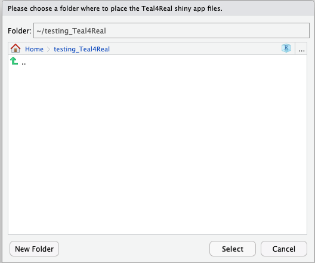
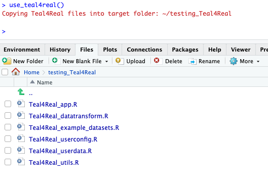
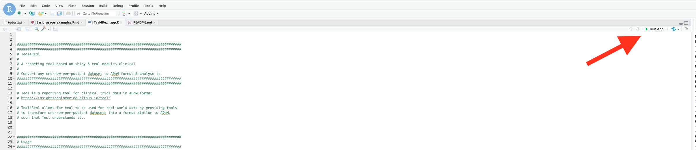

Basic usage examples
Basic_usage_examples.RmdGetting the first demo app to run
To get started, install the Teal4Real package and
dependencies as described here. This
vignette assumes you are using RStudio. However, this is not a
requirement for using Teal4Real.
Let’s load the package and use the only function in the package
called use_teal4real().
A dialog will pop up and you will be asked to choose a folder where the app files should be copied to.
library(Teal4Real)
use_teal4real()Let’s create an empty folder and copy the shiny app files there.

You should now see the following files in your app folder:

Open Teal4Real_app.R in the RStudio editor, and click
Run app (top right)

The result should be a demo app like this one
Step two: adapting the app to run on a different dataset
The example above used a dataset adapted from the
survival R package.
If you want to use Teal4Real on your own analysis dataset, you’ll
have to look through all the files with “user” in the filename
(Teal4Real_userconfig.R and
Teal4Real_userdata.R), and read the explanations in the
comments.
You’ll have to provide a function that returns your dataset, plus a number of configurations that tell the app e.g. which variables are time-to-event endpoints, etc.